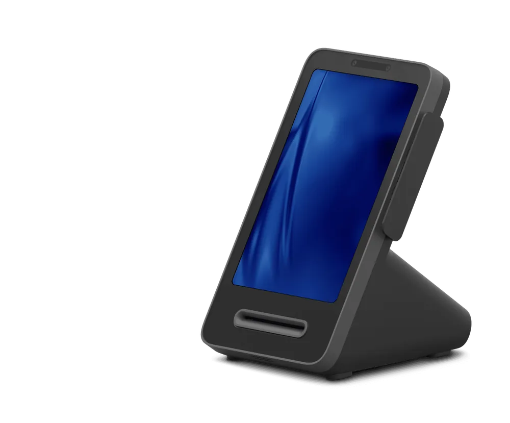
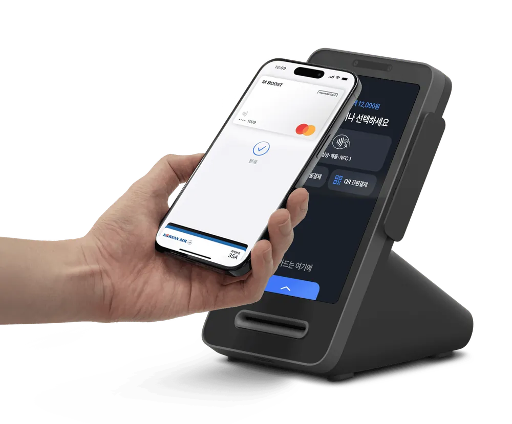
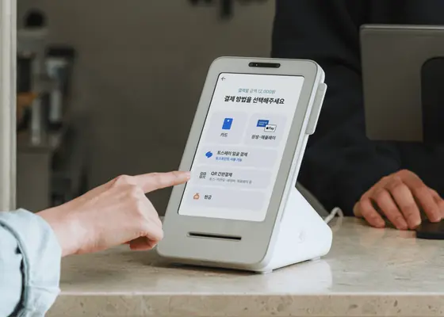
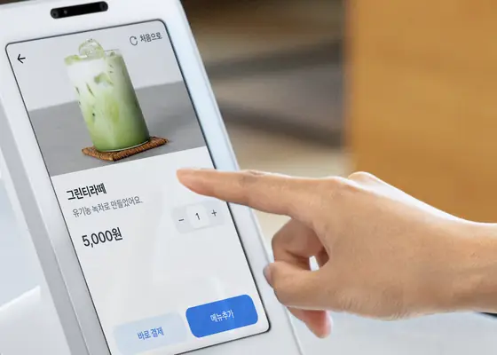
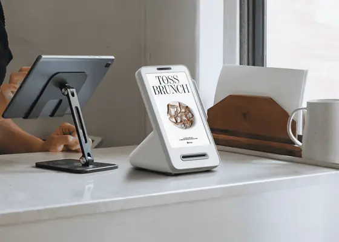
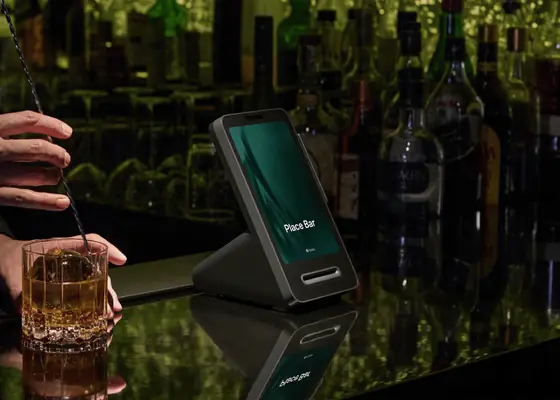

- 홈
- 토스프론트 카드단말기
고객 화면 + 키오스크까지,
사업자라면 무료
토스프론트는 계산대 앞에 두는 고객용 화면이자 카드단말기입니다. 고객이 주문 내역과 결제 금액을 직접 확인하고, 카드·간편결제로 바로 결제합니다. 키오스크 기능도 함께 제공해 작은 매장도 셀프 주문을 받을 수 있습니다.
애플페이
카카오페이
토스페이
키오스크 기능
무료올인원 패키지 포함 · 사업자 무료 제공 이벤트


주요 기능
계산대가 똑똑해집니다
- 고객 주문 내역 실시간 표시
- 결제 금액 · 잔액 안내
- 간편결제 — 애플페이 · 카카오페이 · 토스페이
- 키오스크 기능까지 제공
- 포인트 적립 · 사용 처리
- 브랜드 로고 · 홍보 이미지 설정
- 포스기와 자동 연동 — 별도 설정 없음
카페·식당·바, 어디에나 어울립니다




토스프론트 카드단말기, 이런 매장에 딱 맞습니다
간편결제 손님이 많은 매장애플페이·카카오페이·토스페이를 단말기 하나로 받습니다.
1인·소규모 매장키오스크 기능으로 주문을 받으면 계산대 업무가 줄어듭니다.
단골 관리가 필요한 매장포인트 적립과 사용을 결제 화면에서 바로 처리합니다.
매장 홍보를 하고 싶은 곳대기 화면에 브랜드 로고와 홍보 이미지를 띄울 수 있습니다.
복잡한 절차는 포스모스가 대행합니다
상담 신청부터 운영 시작까지, 일반적으로 상담 신청 후 2주 이내에 모든 설치가 끝납니다.
- 상담 신청전화나 온라인으로 신청하면 담당자가 매장 규모·업종·필요 기능을 파악해 맞춤 패키지를 안내합니다.당일 ~ 1영업일
- 서류 및 가맹 처리카드사 가맹 신청과 필요한 서류를 포스모스가 대행합니다.1~3영업일
- 인터넷 · CCTV 설치전문 기사가 방문해 인터넷, WiFi, CCTV를 매장 구조에 맞게 설치합니다.3~5영업일
- 포스기 설치 및 교육포스기·카드단말기를 설치하고 사용법 교육과 메뉴 등록을 함께 도와드립니다.설치 당일
- 운영 시작설치가 끝나면 바로 영업할 수 있고, 이후에도 전화·카카오 채널로 지원받습니다.설치 완료 즉시
토스프론트 카드단말기 자주 묻는 질문
토스프론트는 정말 무료인가요?
사업자라면 무료로 받을 수 있는 이벤트를 진행 중이며, 포스모스 올인원 패키지에도 토스프론트 카드단말기가 무료로 포함되어 있습니다. 자세한 조건은 상담 시 안내해 드립니다.
어떤 결제 수단을 받을 수 있나요?
카드 결제와 함께 애플페이, 카카오페이, 토스페이 같은 간편결제를 받을 수 있습니다.
키오스크처럼 쓸 수 있나요?
네. 토스프론트는 키오스크 기능을 함께 제공합니다. 더 큰 화면의 전용 키오스크가 필요하다면 21인치 키오스크도 상담해 드립니다.
포스기와 따로 설정해야 하나요?
아니요. 포스모스 포스기와 자동으로 연동되어 별도 설정이 필요 없습니다.